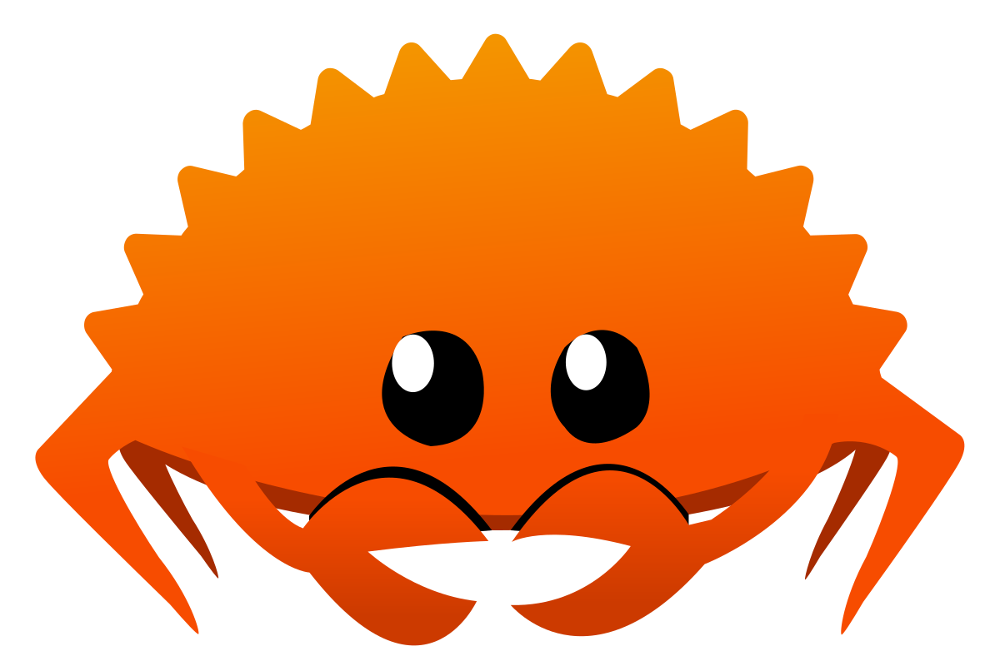
Laurențiu Nicola
“Rust is a systems programming language that runs blazingly fast, prevents segfaults, and guarantees thread safety.”
“A language empowering everyone to build reliable and efficient software.”
$ rustup install stable
$ cargo new hello
Created binary (application) `hello` project
$ cargo add gdal
.
├── Cargo.lock
├── Cargo.toml
└── src
└── main.rs
[package]
name = "hello"
version = "0.1.0"
edition = "2024"
[dependencies]
gdal = "0.18.0"
use gdal::{Dataset, errors::GdalError};
fn main() -> Result<(), GdalError> {
let ds = Dataset::open("in.tif")?;
for (index, band) in ds.rasterbands().enumerate() {
let band = band?;
println!("Band {}: {}x{}", index + 1, band.x_size(), band.y_size());
}
Ok(())
}
$ cargo run
Compiling hello v0.1.0 (hello)
[…]
Finished `dev` profile [unoptimized + debuginfo] target(s) in 3.06s
Running `target/debug/hello`
Band 1: 10980x10980
i8,
u8, …,
f32,
f64,
char
[i32; 16],
Vec<i32>,
&[i32]
String,
&str
struct Pair<T> { first: T, second: T
}
(i32, String)
enum Result<T, E> { Ok(T), Err(E) }
&T, &mut T
*const T, *mut T
vec.len()
struct Cat {
name: String,
}
trait SayHello {
fn say_hello(&self);
}
impl SayHello for Cat {
fn say_hello(&self) {
println!("Meow! I'm {}", self.name);
}
}
let cat = Cat { name: "Matilda".to_string() };
cat.say_hello();
NameError, ci
și erori de logică
SIGSEGV etc.
* exceptând codul
unsafe
Technology from the past come to save the future from itself
void f(int *p, int *q) {
*p += *q;
*p += *q;
}
void g(int *p, int *q) {
*p += *q * 2;
}
f(&x, &x);
f și
g nu sunt
echivalente deoarece
p și
q pot indica spre
aceeași valoare
struct Person<'a> {
first_name: &'a str,
last_name: &'a str,
}
let buffer = "Ion Popescu";
let person = Person {
first_name: &buffer[..3],
last_name: &buffer[4..],
};
class ::String
def blank?
/\A[[:space:]]*\z/ == self
end
end
extern "C" fn fast_blank(buf: &Buf) -> bool {
buf.as_slice().chars().all(|c| c.is_whitespace())
}
static VALUE
rb_str_blank_as(VALUE str)
{
rb_encoding *enc;
char *s, *e;
enc = STR_ENC_GET(str);
s = RSTRING_PTR(str);
if (!s || RSTRING_LEN(str) == 0) return Qtrue;
e = RSTRING_END(str);
while (s < e) {
int n;
unsigned int cc = rb_enc_codepoint_len(s, e, &n, enc);
switch (cc) {
case 9:
case 0xa:
case 0xb:
case 0xc:
case 0xd:
case 0x20:
case 0x85:
case 0xa0:
case 0x1680:
case 0x2000:
case 0x2001:
case 0x2002:
case 0x2003:
case 0x2004:
case 0x2005:
case 0x2006:
case 0x2007:
case 0x2008:
case 0x2009:
case 0x200a:
case 0x2028:
case 0x2029:
case 0x202f:
case 0x205f:
case 0x3000:
/* found */
break;
default:
return Qfalse;
}
s += n;
}
return Qtrue;
}
#define STR_ENC_GET(str) rb_enc_from_index(ENCODING_GET(str))
static VALUE
rb_str_blank(VALUE str)
{
rb_encoding *enc;
char *s, *e;
enc = STR_ENC_GET(str);
s = RSTRING_PTR(str);
if (!s || RSTRING_LEN(str) == 0) return Qtrue;
e = RSTRING_END(str);
while (s < e) {
int n;
unsigned int cc = rb_enc_codepoint_len(s, e, &n, enc);
if (!rb_isspace(cc) && cc != 0) return Qfalse;
s += n;
}
return Qtrue;
}
| Ruby | 946K iter/s |
| C | 10.5M iter/s |
| Rust | 11M iter/s |
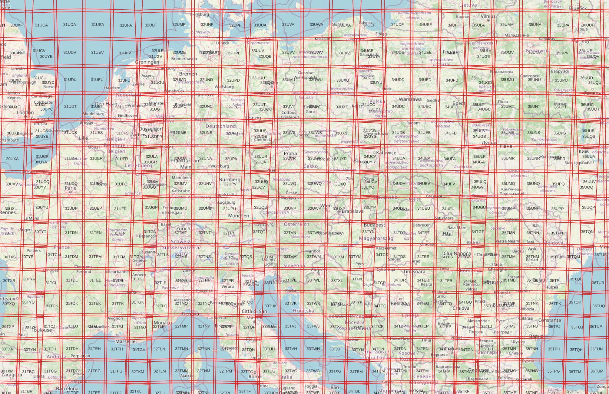
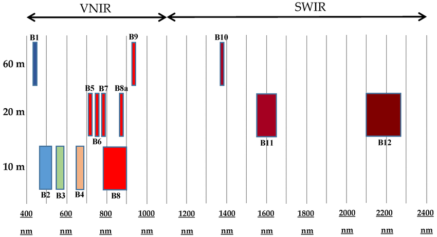
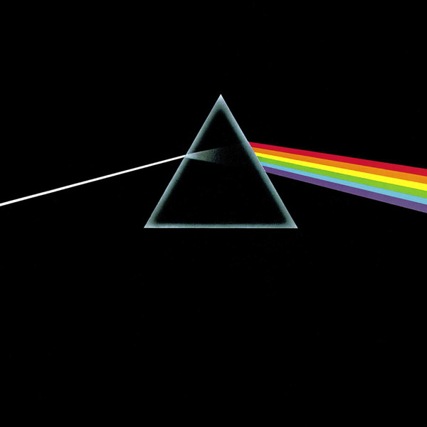
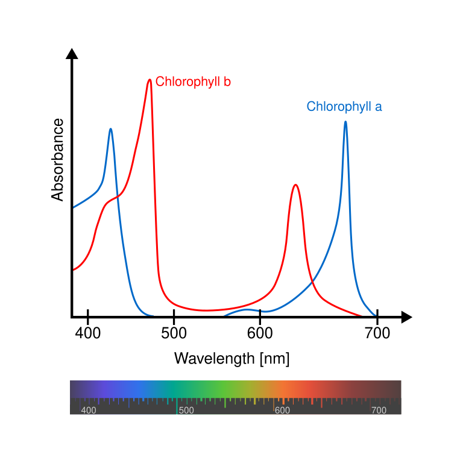
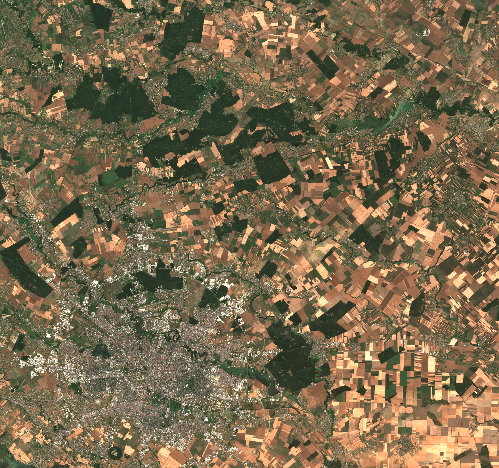
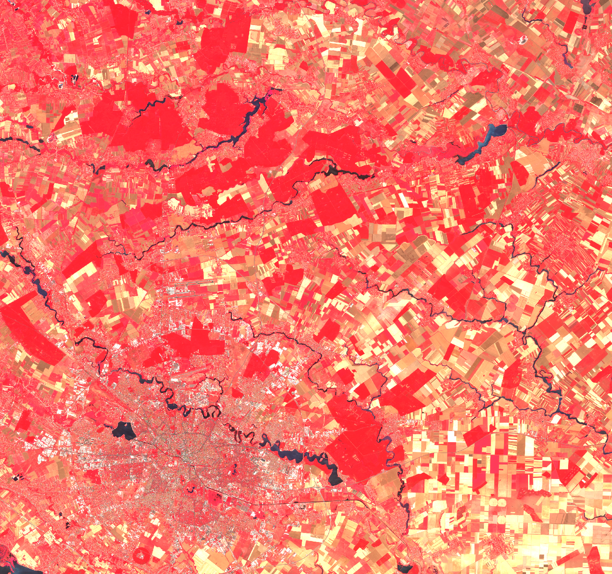
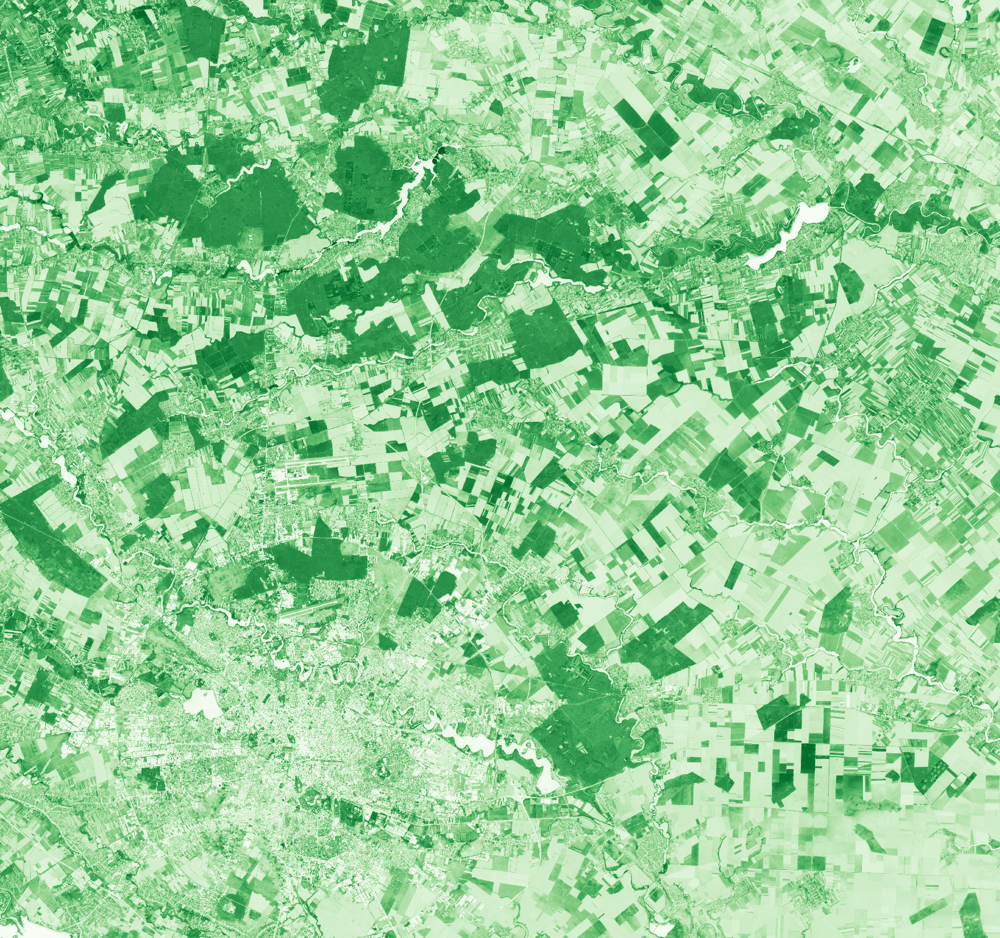
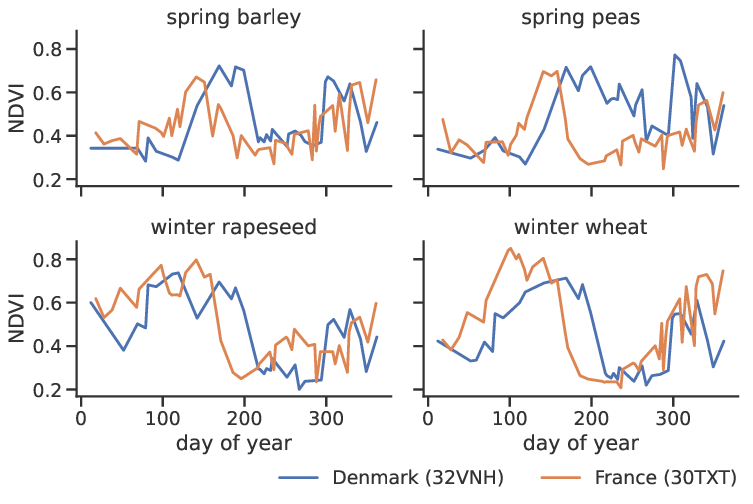
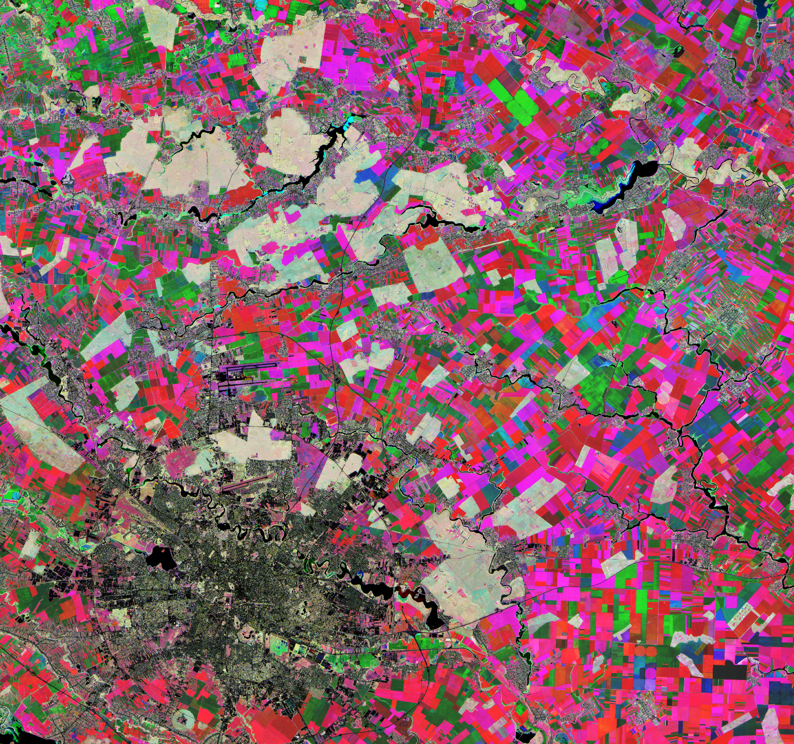
use gdal::{Dataset, GdalOpenFlags::*};
let open_flags = GDAL_OF_RASTER | GDAL_OF_THREAD_SAFE;
let ds = Dataset::open_ex(
path,
DatasetOptions {
open_flags,
..Default::default()
},
)?;
let mut data = ds
.rasterband(1)?
.read_as(window, window_size, window_size, None)?
.to_array()?;
data.mapv_inplace(|x| x + offset);
fn ndvi(b4: i16, b8: i16, scl: u8) -> f32 {
if matches!(scl, 0 | 1 | 6 | 8 | 9 | 10 | 11) {
return f32::NAN;
}
let (b4, b8) = (b4 as f32, b8 as f32);
if b8 + b4 == 0.0 {
f32::NAN
} else {
(b8 - b4) / (b8 + b4).clamp(-1.0, 1.0)
}
}
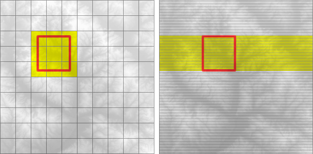
geo, geos*, robust
rstar,
geo-index†
proj*, geodesy†
gdal*,
netcdf*, gpx,
geojson, wkt,
wkb, kml,
osm, transit,
shapefile, STAC‡,
PgSTAC‡, GeoTIFF‡
geozero,
geocoding, geohash,
polyline
rinexbindgenautocxx, …pyo3extendr-apineonmaturin
{kind=link}